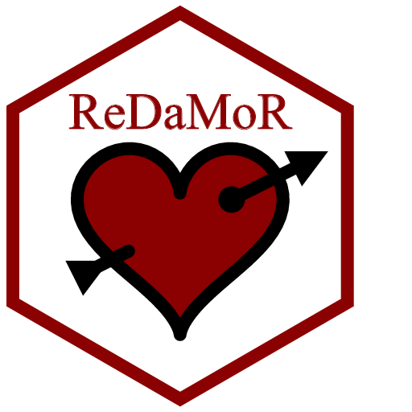

Relational Data Modeler 
The ReDaMoR package allows the manipulation of relational data models in R. It provides functions to create, import and save relational data models. These functions are accessible through a graphical user interface made with Shiny.
A public instance of the Shiny app is available here.
The main features of ReDaMoR are the following:
- Create data model from scratch with a graphical user interface
- Save data model in a json format
- Import SQL data model generated with MySQL Workbench
- Document data types as R types (character, numeric, logical, …)
- Add comments to tables and fields to improve model documentation
- Check and auto-correct model constraints (types, keys, uniqueness, mandatory fields)
- Confront data to the model to check their compatibility
- Support of matrices (>= 0.5.0)
The TKCat package relies on ReDaMoR to facilitate the management of data from knowledge resources which are manipulated as modeled database (MDB) objects.
The package can also be tested in Rstudio Cloud.
library(ReDaMoR)
m <- model_relational_data()You can also run the code documented in the package vignette.
Introduction
In R, data are often stored in data frames which are tables in which each row represents a record and each column a variable. Because data frames are highly used they have been improved in different objects such as tibble, data.table or AnnotatedDataFrame.
However, in many projects, the data do not fit in only one table but they are organized in different data frames, each of them dealing with a specific concept. These tables are often related to each other by some variables. Depending on the diversity of the concepts, it can be difficult to remember what these tables represent and how they are connected. Fortunately, because they are tables, a set of data frames can be directly documented using a relational data model.
The datamodelr R package provides tools to document relational data. The generate data models are leveraged by the dm R package to interact more easily with relational data.
Here we present the ReDaMoR package which also allows the manipulation of relational data models in R but with an approach quite different from the one implemented in datamodelr. It provides functions to create, import and save relational data models. These functions are accessible through a graphical user interface made with Shiny.
The main features of ReDaMoR are the following:
- Create data model from scratch with a graphical user interface
- Save data model in a json format
- Import SQL data model generated with MySQL Workbench
- Document data types as R types (character, numeric, logical, …)
- Add comments to tables and fields to improve model documentation
- Check and auto-correct model constraints (types, keys, uniqueness, mandatory fields)
- Confront data to the model to check their compatibility
- Support of matrices (>= 0.5.0)
The TKCat package relies on ReDaMoR to facilitate the management of data from knowledge resources which are manipulated as modeled database (MDB) objects.
Installation
From CRAN
install.packages("ReDaMoR")Dependencies
The following R packages available on CRAN are required:
- dplyr: A Grammar of Data Manipulation
- magrittr: A Forward-Pipe Operator for R
- visNetwork: Network Visualization using ‘vis.js’ Library
- readr: Read Rectangular Text Data
- shiny: Web Application Framework for R
- shinyjs: Easily Improve the User Experience of Your Shiny Apps in Seconds
- jsonlite: A Simple and Robust JSON Parser and Generator for R
- DT: A Wrapper of the JavaScript Library ‘DataTables’
- colourpicker: A Colour Picker Tool for Shiny and for Selecting Colours in Plots
- rintrojs: Wrapper for the ‘Intro.js’ Library
- markdown: Render Markdown with ‘commonmark’
- rstudioapi: Safely Access the RStudio API
- crayon: Colored Terminal Output
- utils: The R Utils Package
- graphics: The R Graphics Package
- stats: The R Stats Package
- Matrix: Sparse and Dense Matrix Classes and Methods
And those are suggested:
From github
devtools::install_github("patzaw/ReDaMoR")Documentation
Documentation is available in this vignette.
TKCat: Tailored Knowledge Catalog
The aim of TKCat (Tailored Knowledge Catalog) is to facilitate the management of data from knowledge resources that are frequently used alone or together in research environments. In TKCat, knowledge resources are manipulated as modeled database (MDB) objects. These objects provide access to the data tables along with a general description of the resource and a detail data model generated with ReDaMoR documenting the tables, their fields and their relationships. These MDB are then gathered in catalogs that can be easily explored an shared. TKCat provides tools to easily subset, filter and combine MDBs and create new catalogs suited for specific needs.